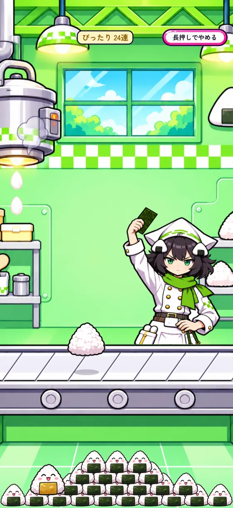
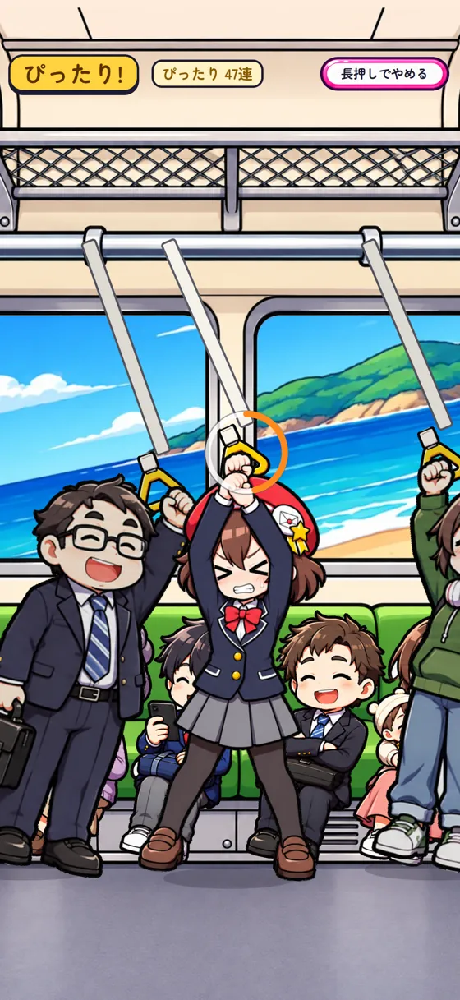
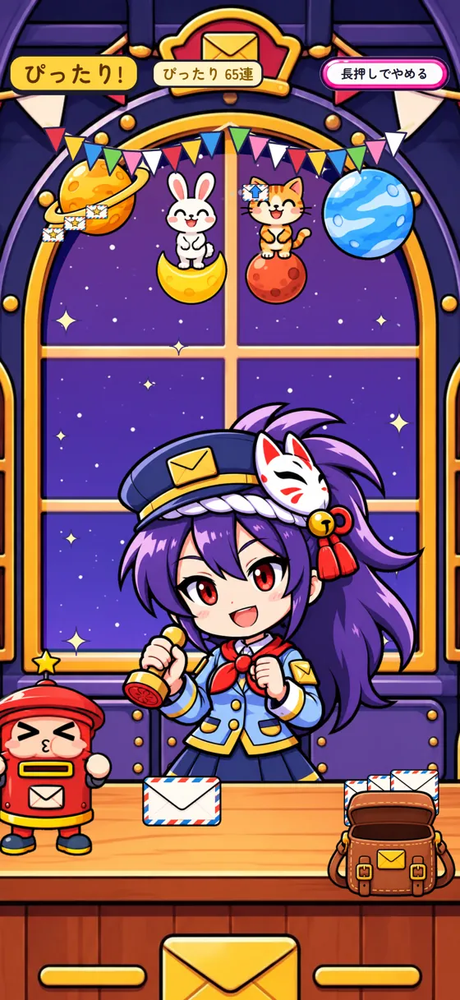
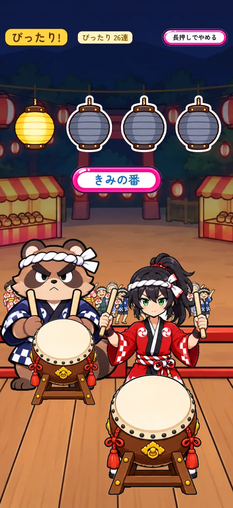
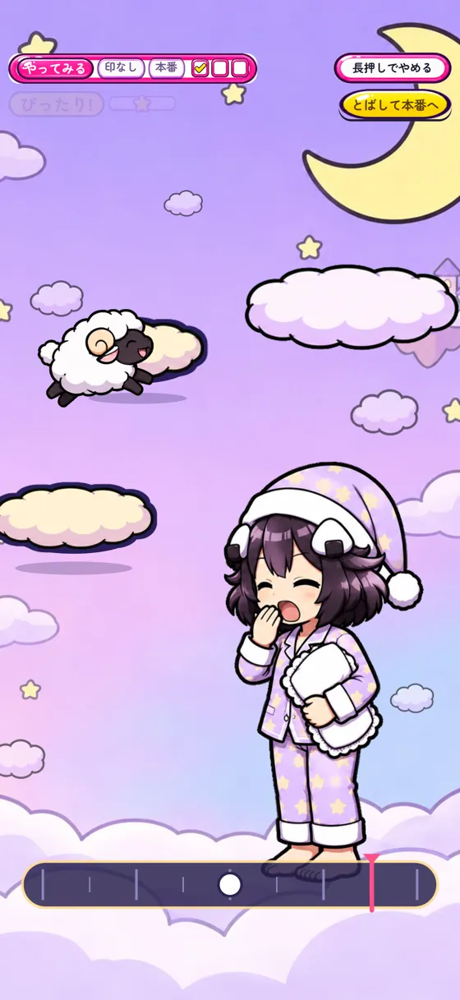
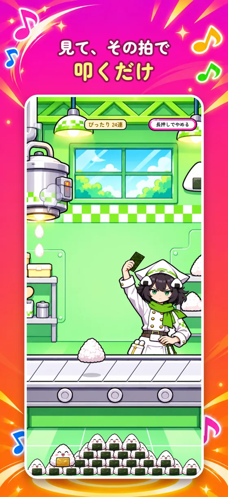

概要
ひとことで: 画面を見て、その拍でたたくだけの、リズムのミニゲーム集。
おにぎり工場、お祭りの太鼓、朝の電車。曲が変わると、場面もたたく物もまるごと変わる。
何をすればいいかは、画面を見れば分かる。はじめての曲は、お手本と練習から入れる。
点数と評価でベストを目指す。ブラウザでは3曲を、入れずにそのまま遊べる。
| 名前 | ビートぽん! |
|---|---|
| ジャンル | リズムゲーム(ミニゲーム集) |
| 機種と配信 | iPhone 配信中(2026年11月24日から・iOS 15.0 以降) ブラウザ版 yurustudio.github.io/beatpon/play/(3曲) Android 近日公開 |
| 遊ぶ人数 | 1人 |
| 言語 | 日本語 |
| 開発 | YURU(個人)・X @apkderete |
遊び方の特徴
- 見て、その拍でたたく流れてくる物や、お手本の動きを見て、合う拍で画面をたたきます。何をすればいいかは、場面を見れば分かります。
- 曲ごとに場面が変わる工場のベルト、お祭りのやぐら、朝の電車のつり革など、曲ごとに場面と登場する人がまるごと変わります。
- お手本と練習はじめての曲は、お手本を見てから練習できます。はじめてでも迷いません。
- 点数と評価ぴったりの数、フルコンボ、オールぴったり。曲ごとのベストが残ります。
- クリアの後のおまけiPhone 版では、曲をクリアすると読める4コマ漫画と、クリアした曲を聴ける CD の棚があります。
画面写真
ゲームの画面をそのまま撮った物です(縦 1320×2868)。6枚目だけはストアの紹介画像です。写真を押すと大きい画像が開きます。
画面写真・ロゴ・アイコンをまとめて落とす(zip・約5MB)
おにぎり工場落とす 
朝の電車落とす 
うちゅう郵便局落とす 
お祭りの太鼓落とす 
練習の画面落とす 
ストアの紹介画像落とす


ロゴ・アイコン


色や形を変えずにお使いください。大きさを変えるのはかまいません。
動画
 ビートぽん! 曲ごとに場面が変わるリズムゲームYouTube ショート(縦)
ビートぽん! 曲ごとに場面が変わるリズムゲームYouTube ショート(縦)
音なしの画面の動画です(おにぎり工場・お祭りの太鼓・朝の電車)。mp4 を落とす
開発者・問い合わせ
YURU(個人)。1人でスマホアプリとゲームを作っています。
取材・素材・配信のことは、X の DM でお気軽にどうぞ。
X の DM(@apkderete)配信・動画のガイドライン
ビートぽん!を遊ぶ配信・動画は、自由に作ってください。こちらへの連絡も要りません。
してよいこと
- ライブ配信、録画の実況、ショート動画、切り抜き
- YouTube・Twitch・ニコニコなど、各サービスの機能での収益化(広告・メンバーシップ・投げ銭など)
- このページの画面写真・ロゴ・アイコンを、サムネイルや記事に使うこと
- 遊んでいる画面と一緒に、ゲームの曲が配信や動画の中で流れること
クレジットの書き方(できれば)
概要欄などに、次のように書いてもらえるとうれしいです。書かなくても配信してかまいません。
ビートぽん!(YURU / @apkderete)
https://yurustudio.github.io/beatpon/press/
https://yurustudio.github.io/beatpon/press/
ご遠慮ください
- ネタバレの切り抜き: クリアの後に読める4コマ漫画や、曲の終わりの場面だけを切り出した動画・画像。遊んでいる流れの中で映るのはかまいません。
- ゲームの曲・絵だけを抜き出して流したり、配ったり、別の作品に使ったりすること
- 公式・開発者を名乗ること
曲について
- ゲームの曲は、ゲームの中で使えるように用意した物です。遊んでいる配信・動画の中で流れる分には、そのままお使いください。
- 動画サイトの自動の判定で、曲に権利の申し立てが付くことが無いとは言い切れません。付いた時は、X の DM で知らせてください。こちらから配信・動画に申し立てをすることはありません。
そのほか
- 企業の案件(広告)の中で取り上げる時は、先に X の DM でひと言ください。
- このガイドラインは、予告なく書き替えることがあります。書き替える前に出した配信・動画は、そのままでかまいません。
2026年11月25日